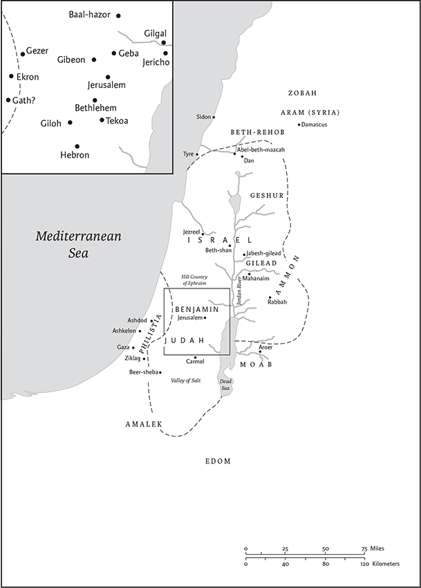
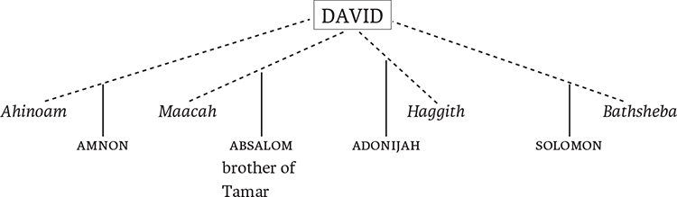

2 Samuel
2 Kingdoms in Greek
Name and Location in Canon
First and Second Samuel were originally a single work, so that much of the information in the Introduction to 1 Samuel (pp. 405‐06) pertains to 2 Samuel as well. The name of the book (as relating to the prophet Samuel) is even less appropriate for 2 Samuel, since Samuel dies in 1 Sam 25.1 and is never mentioned in 2 Samuel.
The division between 1 and 2 Samuel is artificial and was apparently based on considerations of length when it was first made in the LXX, where 2 Samuel bears the title 2 Kingdoms or 2 Reigns. Following a pattern found in the Torah/Pentateuch and Joshua, the book division was determined by the death of a main character—in this case, King Saul.
Literary History
Many major critical issues in 2 Samuel revolve around chs 9–20. These chapters (or in some views chs 13–20), together with 1 Kings 1–2, have been named the “Court History” or “Succession Narrative,” after their perceived intention of dealing with the question of who would succeed David as king. Many scholars have viewed this proposed source document as almost contemporaneous with the events it narrates. However, the extent and early date of this hypothetical source have been called into question because it is impossible to extract these chapters cleanly from the surrounding narrative and to see them as a separate source; there are, for example, ties between chs 9–20 and chs 2–4, such as the description of Mephibosheth’s (Meribbaal’s) injury in 4.4 and 9.3 and the importance of the “sons of Zeruiah,” Joab and his brothers outside of this unit. In general, many scholars are now skeptical that any part of 2 Samuel was written close to the time of the events that it putatively describes. Questions of literary history also loom large in the consideration of ch 7, with its unconditional promise of a dynasty made to David. While scholars generally recognize this as a Deuteronomistic composition as it now stands, many think that underlying it is an older version of God’s promise to David.
Structure and Contents
Second Samuel can be divided into four sections.
Section one (1.1–5.5) describes how, after Saul’s death (ch 1), David becomes king first of Judah (2.1–4a) and then, after a civil war that included the assassinations of Saul’s relatives Abner (ch 3) and Ishbaal (ch 4), king of all Israel (5.1–5).
Section two (5.6–12.31) tells of David’s annexation of Jerusalem (5.5–6.23), his interest in building a temple there resulting in the divine promise of a dynasty (ch 7), and his victories over surrounding peoples (chs 8–12), which are interrupted by the story of his affair with Bathsheba (11.2–12.25).
Section three (chs 13–20) recounts Absalom’s revolt and that led by Sheba (ch 20).
Section four (chs 21–24), often considered an appendix, is a miscellaneous collection of narratives, military lists, and poems.
Interpretation
Scholars and other readers disagree about the perspective on David in these chapters. Some contend that the pro‐Davidic, apologetic character of 1 Samuel continues, as those who stand in David’s way perish, though never by his own hand or order. Joab and the “sons of Zeruiah” are often blamed for the murders of David’s enemies—Abner (3.26–30), Absalom (18.1–15), and Amasa (20.4–10)—while David is too tender for such deeds (3.39; 16.10; 19.22) and is deeply grieved by their deaths (3.31–37; 18.22–19.8). In this reading, the annihilation of Saul’s line (recounted apologetically in 21.1–14, which once preceded ch 9) secures David’s hold on the throne. Only Mephibosheth, Jonathan’s crippled disabled son, remains alive, and David keeps a watchful eye on him by bringing him to the royal court (ch 9). Even when David commits adultery with Bathsheba and arranges for the death of her husband, it has been argued, David’s repentance is exemplary and is immediately accepted (12.13). However, other readers point precisely to David’s adultery and his inability to control his children as evidence that the Court History paints both David and the monarchy in a very negative light. It is fair to say that 2 Samuel in its current form depicts David as a complex, highly ambiguous character who is nevertheless blessed by the Lord.
Characterization exemplified by deeds and speeches is even more significant in 2 Samuel than in 1 Samuel. The array of characters can bewilder new readers, so that keeping tabs on the identities of characters and their relationship to David can be useful. Minute, seemingly insignificant details in the narrative often signal points of ideological or literary significance beneath the surface. Readers do well to ask which characters—especially David—benefit from events that are reported and whether those characters may have been responsible for bringing them about. As in 1 Samuel, a narrative that “protests too much” may lead the critical reader to question whether apologetic interest has replaced historical accuracy. For example, David benefits from Abner’s death (3.20–39), and the narrative’s repeated assertion that David dismissed Abner in peace and knew nothing about Joab’s plan to murder him may lead one to suspect that the narrator is trying to counter just such a charge and even to speculate that David had some role in Abner’s death.
The final four chapters of 2 Samuel contain six passages arranged in symmetrical order: narrative, list, poem, poem, list, narrative. The list poem in (23.1–7) provides David’s “last words,” in the tradition of other leading biblical characters.
Steven L. McKenzie
1 After the death of Saul, when David had returned from defeating the Amalekites, David remained two days in Ziklag. 2On the third day, a man came from Saul’s camp, with his clothes torn and dirt on his head. When he came to David, he fell to the ground and did obeisance. 3David said to him, “Where have you come from?” He said to him, “I have escaped from the camp of Israel.” 4David said to him, “How did things go? Tell me!” He answered, “The army fled from the battle, but also many of the army fell and died; and Saul and his son Jonathan also died.” 5Then David asked the young man who was reporting to him, “How do you know that Saul and his son Jonathan died?” 6The young man reporting to him said, “I happened to be on Mount Gilboa; and there was Saul leaning on his spear, while the chariots and the horsemen drew close to him. 7When he looked behind him, he saw me, and called to me. I answered, ‘Here sir.’ 8And he said to me, ‘Who are you?’ I answered him, ‘I am an Amalekite.’ 9He said to me, ‘Come, stand over me and kill me; for convulsions have seized me, and yet my life still lingers.’ 10So I stood over him, and killed him, for I knew that he could not live after he had fallen. I took the crown that was on his head and the armlet that was on his arm, and I have brought them here to my lord.”
11Then David took hold of his clothes and tore them; and all the men who were with him did the same. 12They mourned and wept, and fasted until evening for Saul and for his son Jonathan, and for the army of the Lord and for the house of Israel, because they had fallen by the sword. 13David said to the young man who had reported to him, “Where do you come from?” He answered, “I am the son of a resident alien, an Amalekite.” 14David said to him, “Were you not afraid to lift your hand to destroy the Lord’s anointed?” 15Then David called one of the young men and said, “Come here and strike him down.” So he struck him down and he died. 16David said to him, “Your blood be on your head; for your own mouth has testified against you, saying, ‘I have killed the Lord’s anointed.’”
17David intoned this lamentation over Saul and his son Jonathan. 18(He ordered that The Song of the Bowa be taught to the people of Judah; it is written in the Book of Jashar.) He said:
19Your glory, O Israel, lies slain upon your high places!
How the mighty have fallen!
20Tell it not in Gath,
proclaim it not in the streets of Ashkelon;
or the daughters of the Philistines will rejoice,
the daughters of the uncircumcised will exult.
21You mountains of Gilboa,
let there be no dew or rain upon you,
nor bounteous fields!b
For there the shield of the mighty was defiled,
the shield of Saul, anointed with oil no more.
22From the blood of the slain,
from the fat of the mighty,
the bow of Jonathan did not turn back,
nor the sword of Saul return empty.
23Saul and Jonathan, beloved and lovely!
In life and in death they were not divided;
they were swifter than eagles,
they were stronger than lions.
24O daughters of Israel, weep over Saul,
who clothed you with crimson, in luxury,
who put ornaments of gold on your apparel.
25How the mighty have fallen
in the midst of the battle!
Jonathan lies slain upon your high places.
26I am distressed for you, my brother Jonathan;
greatly beloved were you to me;
your love to me was wonderful,
passing the love of women.
27How the mighty have fallen,
and the weapons of war perished!
2 After this David inquired of the Lord, “Shall I go up into any of the cities of Judah?” The Lord said to him, “Go up.” David said, “To which shall I go up?” He said, “To Hebron.” 2So David went up there, along with his two wives, Ahinoam of Jezreel, and Abigail the widow of Nabal of Carmel. 3David brought up the men who were with him, every one with his household; and they settled in the towns of Hebron. 4Then the people of Judah came, and there they anointed David king over the house of Judah.
When they told David, “It was the people of Jabesh‐gilead who buried Saul,” 5David sent messengers to the people of Jabeshgilead, and said to them, “May you be blessed by the Lord, because you showed this loyalty to Saul your lord, and buried him! 6Now may the Lord show steadfast love and faithfulness to you! And I too will reward you because you have done this thing. 7Therefore let your hands be strong, and be valiant; for Saul your lord is dead, and the house of Judah has anointed me king over them.”
8But Abner son of Ner, commander of Saul’s army, had taken Ishbaala son of Saul, and brought him over to Mahanaim. 9He made him king over Gilead, the Ashurites, Jezreel, Ephraim, Benjamin, and over all Israel. 10Ishbaal,a Saul’s son, was forty years old when he began to reign over Israel, and he reigned two years. But the house of Judah followed David. 11The time that David was king in Hebron over the house of Judah was seven years and six months.
12Abner son of Ner, and the servants of Ishbaala son of Saul, went out from Mahanaim to Gibeon. 13Joab son of Zeruiah, and the servants of David, went out and met them at the pool of Gibeon. One group sat on one side of the pool, while the other sat on the other side of the pool. 14Abner said to Joab, “Let the young men come forward and have a contest before us.” Joab said, “Let them come forward.” 15So they came forward and were counted as they passed by, twelve for Benjamin and Ishbaala son of Saul, and twelve of the servants of David. 16Each grasped his opponent by the head, and thrust his sword in his opponent’s side; so they fell down together. Therefore that place was called Helkath‐hazzurim,b which is at Gibeon. 17The battle was very fierce that day; and Abner and the men of Israel were beaten by the servants of David.
18The three sons of Zeruiah were there, Joab, Abishai, and Asahel. Now Asahel was as swift of foot as a wild gazelle. 19Asahel pursued Abner, turning neither to the right nor to the left as he followed him. 20Then Abner looked back and said, “Is it you, Asahel?” He answered, “Yes, it is.” 21Abner said to him, “Turn to your right or to your left, and seize one of the young men, and take his spoil.” But Asahel would not turn away from following him. 22Abner said again to Asahel, “Turn away from following me; why should I strike you to the ground? How then could I show my face to your brother Joab?” 23But he refused to turn away. So Abner struck him in the stomach with the butt of his spear, so that the spear came out at his back. He fell there, and died where he lay. And all those who came to the place where Asahel had fallen and died, stood still.
24But Joab and Abishai pursued Abner. As the sun was going down they came to the hill of Ammah, which lies before Giah on the way to the wilderness of Gibeon. 25The Benjaminites rallied around Abner and formed a single band; they took their stand on the top of a hill. 26Then Abner called to Joab, “Is the sword to keep devouring forever? Do you not know that the end will be bitter? How long will it be before you order your people to turn from the pursuit of their kinsmen?” 27Joab said, “As God lives, if you had not spoken, the people would have continued to pursue their kinsmen, not stopping until morning.” 28Joab sounded the trumpet and all the people stopped; they no longer pursued Israel or engaged in battle any further.
29Abner and his men traveled all that night through the Arabah; they crossed the Jordan, and, marching the whole forenoon,a they came to Mahanaim. 30Joab returned from the pursuit of Abner; and when he had gathered all the people together, there were missing of David’s servants nineteen men besides Asahel. 31But the servants of David had killed of Benjamin three hundred sixty of Abner’s men. 32They took up Asahel and buried him in the tomb of his father, which was at Bethlehem. Joab and his men marched all night, and the day broke upon them at Hebron.
3 There was a long war between the house of Saul and the house of David; David grew stronger and stronger, while the house of Saul became weaker and weaker.
2Sons were born to David at Hebron: his firstborn was Amnon, of Ahinoam of Jezreel; 3his second, Chileab, of Abigail the widow of Nabal of Carmel; the third, Absalom son of Maacah, daughter of King Talmai of Geshur; 4the fourth, Adonijah son of Haggith; the fifth, Shephatiah son of Abital; 5and the sixth, Ithream, of David’s wife Eglah. These were born to David in Hebron.
6While there was war between the house of Saul and the house of David, Abner was making himself strong in the house of Saul. 7Now Saul had a concubine whose name was Rizpah daughter of Aiah. And Ishbaalb said to Abner, “Why have you gone in to my father’s concubine?” 8The words of Ishbaalc made Abner very angry; he said, “Am I a dog’s head for Judah? Today I keep showing loyalty to the house of your father Saul, to his brothers, and to his friends, and have not given you into the hand of David; and yet you charge me now with a crime concerning this woman. 9So may God do to Abner and so may he add to it! For just what the Lord has sworn to David, that will I accomplish for him, 10to transfer the kingdom from the house of Saul, and set up the throne of David over Israel and over Judah, from Dan to Beer‐sheba.” 11And Ishbaalb could not answer Abner another word, because he feared him.
12Abner sent messengers to David at Hebron,d saying, “To whom does the land belong? Make your covenant with me, and I will give you my support to bring all Israel over to you.” 13He said, “Good; I will make a covenant with you. But one thing I require of you: you shall never appear in my presence unless you bring Saul’s daughter Michal when you come to see me.” 14Then David sent messengers to Saul’s son Ishbaal,a saying, “Give me my wife Michal, to whom I became engaged at the price of one hundred foreskins of the Philistines.” 15Ishbaala sent and took her from her husband Paltiel the son of Laish. 16But her husband went with her, weeping as he walked behind her all the way to Bahurim. Then Abner said to him, “Go back home!” So he went back.
17Abner sent word to the elders of Israel, saying, “For some time past you have been seeking David as king over you. 18Now then bring it about; for the Lord has promised David: Through my servant David I will save my people Israel from the hand of the Philistines, and from all their enemies.” 19Abner also spoke directly to the Benjaminites; then Abner went to tell David at Hebron all that Israel and the whole house of Benjamin were ready to do.
20When Abner came with twenty men to David at Hebron, David made a feast for Abner and the men who were with him. 21Abner said to David, “Let me go and rally all Israel to my lord the king, in order that they may make a covenant with you, and that you may reign over all that your heart desires.” So David dismissed Abner, and he went away in peace.
22Just then the servants of David arrived with Joab from a raid, bringing much spoil with them. But Abner was not with David at Hebron, for Davidb had dismissed him, and he had gone away in peace. 23When Joab and all the army that was with him came, it was told Joab, “Abner son of Ner came to the king, and he has dismissed him, and he has gone away in peace.” 24Then Joab went to the king and said, “What have you done? Abner came to you; why did you dismiss him, so that he got away? 25You know that Abner son of Ner came to deceive you, and to learn your comings and goings and to learn all that you are doing.”
26When Joab came out from David’s presence, he sent messengers after Abner, and they brought him back from the cistern of Sirah; but David did not know about it. 27When Abner returned to Hebron, Joab took him aside in the gateway to speak with him privately, and there he stabbed him in the stomach. So he died for sheddingc the blood of Asahel, Joab’sd brother. 28Afterward, when David heard of it, he said, “I and my kingdom are forever guiltless before the Lord for the blood of Abner son of Ner. 29May the guilte fall on the head of Joab, and on all his father’s house; and may the house of Joab never be without one who has a discharge, or who is leprous,f or who holds a spindle, or who falls by the sword, or who lacks food!” 30So Joab and his brother Abishai murdered Abner because he had killed their brother Asahel in the battle at Gibeon.
31Then David said to Joab and to all the people who were with him, “Tear your clothes, and put on sackcloth, and mourn over Abner.” And King David followed the bier. 32They buried Abner at Hebron. The king lifted up his voice and wept at the grave of Abner, and all the people wept. 33The king lamented for Abner, saying,
“Should Abner die as a fool dies?
34Your hands were not bound,
your feet were not fettered;
as one falls before the wicked
you have fallen.”
And all the people wept over him again. 35Then all the people came to persuade David to eat something while it was still day; but David swore, saying, “So may God do to me, and more, if I taste bread or anything else before the sun goes down!” 36All the people took notice of it, and it pleased them; just as everything the king did pleased all the people. 37So all the people and all Israel understood that day that the king had no part in the killing of Abner son of Ner. 38And the king said to his servants, “Do you not know that a prince and a great man has fallen this day in Israel? 39Today I am powerless, even though anointed king; these men, the sons of Zeruiah, are too violent for me. The Lord pay back the one who does wickedly in accordance with his wickedness!”
4 When Saul’s son Ishbaala heard that Abner had died at Hebron, his courage failed, and all Israel was dismayed. 2Saul’s son had two captains of raiding bands; the name of the one was Baanah, and the name of the other Rechab. They were sons of Rimmon a Benjaminite from Beeroth—for Beeroth is considered to belong to Benjamin. 3(Now the people of Beeroth had fled to Gittaim and are there as resident aliens to this day).
4Saul’s son Jonathan had a son who was crippled in his feet. He was five years old when the news about Saul and Jonathan came from Jezreel. His nurse picked him up and fled; and, in her haste to flee, it happened that he fell and became lame. His name was Mephibosheth.b
5Now the sons of Rimmon the Beerothite, Rechab and Baanah, set out, and about the heat of the day they came to the house of Ishbaal,c while he was taking his noonday rest. 6They came inside the house as though to take wheat, and they struck him in the stomach; then Rechab and his brother Baanah escaped.d 7Now they had come into the house while he was lying on his couch in his bedchamber; they attacked him, killed him, and beheaded him. Then they took his head and traveled by way of the Arabah all night long. 8They brought the head of Ishbaalc to David at Hebron and said to the king, “Here is the head of Ishbaal,c son of Saul, your enemy, who sought your life; the Lord has avenged my lord the king this day on Saul and on his offspring.”
9David answered Rechab and his brother Baanah, the sons of Rimmon the Beerothite, “As the Lord lives, who has redeemed my life out of every adversity, 10when the one who told me, ‘See, Saul is dead,’ thought he was bringing good news, I seized him and killed him at Ziklag—this was the reward I gave him for his news. 11How much more then, when wicked men have killed a righteous man on his bed in his own house! And now shall I not require his blood at your hand, and destroy you from the earth?” 12So David commanded the young men, and they killed them; they cut off their hands and feet, and hung their bodies beside the pool at Hebron. But the head of Ishbaalc they took and buried in the tomb of Abner at Hebron.
5 Then all the tribes of Israel came to David at Hebron, and said, “Look, we are your bone and flesh. 2For some time, while Saul was king over us, it was you who led out Israel and brought it in. The Lord said to you: It is you who shall be shepherd of my people Israel, you who shall be ruler over Israel.” 3So all the elders of Israel came to the king at Hebron; and King David made a covenant with them at Hebron before the Lord, and they anointed David king over Israel. 4David was thirty years old when he began to reign, and he reigned forty years. 5At Hebron he reigned over Judah seven years and six months; and at Jerusalem he reigned over all Israel and Judah thirty‐three years.
6The king and his men marched to Jerusalem against the Jebusites, the inhabitants of the land, who said to David, “You will not come in here, even the blind and the lame will turn you back”—thinking, “David cannot come in here.” 7Nevertheless David took the stronghold of Zion, which is now the city of David. 8David had said on that day, “Whoever would strike down the Jebusites, let him get up the water shaft to attack the lame and the blind, those whom David hates.”a Therefore it is said, “The blind and the lame shall not come into the house.” 9David occupied the stronghold, and named it the city of David. David built the city all around from the Millo inward. 10And David became greater and greater, for the Lord, the God of hosts, was with him.
11King Hiram of Tyre sent messengers to David, along with cedar trees, and carpenters and masons who built David a house. 12David then perceived that the Lord had established him king over Israel, and that he had exalted his kingdom for the sake of his people Israel.
13In Jerusalem, after he came from Hebron, David took more concubines and wives; and more sons and daughters were born to David. 14These are the names of those who were born to him in Jerusalem: Shammua, Shobab, Nathan, Solomon, 15Ibhar, Elishua, Nepheg, Japhia, 16Elishama, Eliada, and Eliphelet.
17When the Philistines heard that David had been anointed king over Israel, all the Philistines went up in search of David; but David heard about it and went down to the stronghold. 18Now the Philistines had come and spread out in the valley of Rephaim.

The kingdom of David according to Second Samuel. The dashed line shows the approximate boundary of the kingdom at its greatest extent.
19David inquired of the Lord, “Shall I go up against the Philistines? Will you give them into my hand?” The Lord said to David, “Go up; for I will certainly give the Philistines into your hand.” 20So David came to Baalperazim, and David defeated them there. He said, “The Lord has burst forth againsta my enemies before me, like a bursting flood.” Therefore that place is called Baal‐perazim.b 21The Philistines abandoned their idols there, and David and his men carried them away.
22Once again the Philistines came up, and were spread out in the valley of Rephaim. 23When David inquired of the Lord, he said, “You shall not go up; go around to their rear, and come upon them opposite the balsam trees. 24When you hear the sound of marching in the tops of the balsam trees, then be on the alert; for then the Lord has gone out before you to strike down the army of the Philistines.” 25David did just as the Lord had commanded him; and he struck down the Philistines from Geba all the way to Gezer.
6 David again gathered all the chosen men of Israel, thirty thousand. 2David and all the people with him set out and went from Baale‐judah, to bring up from there the ark of God, which is called by the name of the Lord of hosts who is enthroned on the cherubim. 3They carried the ark of God on a new cart, and brought it out of the house of Abinadab, which was on the hill. Uzzah and Ahio,c the sons of Abinadab, were driving the new cart 4with the ark of God;d and Ahioc went in front of the ark. 5David and all the house of Israel were dancing before the Lord with all their might, with songse and lyres and harps and tambourines and castanets and cymbals.
6When they came to the threshing floor of Nacon, Uzzah reached out his hand to the ark of God and took hold of it, for the oxen shook it. 7The anger of the Lord was kindled against Uzzah; and God struck him there because he reached out his hand to the ark;f and he died there beside the ark of God. 8David was angry because the Lord had burst forth with an outburst upon Uzzah; so that place is called Perez‐uzzah,g to this day. 9David was afraid of the Lord that day; he said, “How can the ark of the Lord come into my care?” 10So David was unwilling to take the ark of the Lord into his care in the city of David; instead David took it to the house of Obed‐edom the Gittite. 11The ark of the Lord remained in the house of Obed‐edom the Gittite three months; and the Lord blessed Obed‐edom and all his household.
12It was told King David, “The Lord has blessed the household of Obed‐edom and all that belongs to him, because of the ark of God.” So David went and brought up the ark of God from the house of Obed‐edom to the city of David with rejoicing; 13and when those who bore the ark of the Lord had gone six paces, he sacrificed an ox and a fatling. 14David danced before the Lord with all his might; David was girded with a linen ephod. 15So David and all the house of Israel brought up the ark of the Lord with shouting, and with the sound of the trumpet.
16As the ark of the Lord came into the city of David, Michal daughter of Saul looked out of the window, and saw King David leaping and dancing before the Lord; and she despised him in her heart.
17They brought in the ark of the Lord, and set it in its place, inside the tent that David had pitched for it; and David offered burnt offerings and offerings of well‐being before the Lord. 18When David had finished offering the burnt offerings and the offerings of well‐being, he blessed the people in the name of the Lord of hosts, 19and distributed food among all the people, the whole multitude of Israel, both men and women, to each a cake of bread, a portion of meat,a and a cake of raisins. Then all the people went back to their homes.
20David returned to bless his household. But Michal the daughter of Saul came out to meet David, and said, “How the king of Israel honored himself today, uncovering himself today before the eyes of his servants’ maids, as any vulgar fellow might shamelessly uncover himself!” 21David said to Michal, “It was before the Lord, who chose me in place of your father and all his household, to appoint me as prince over Israel, the people of the Lord, that I have danced before the Lord. 22I will make myself yet more contemptible than this, and I will be abased in my own eyes; but by the maids of whom you have spoken, by them I shall be held in honor.” 23And Michal the daughter of Saul had no child to the day of her death.
7 Now when the king was settled in his house, and the Lord had given him rest from all his enemies around him, 2the king said to the prophet Nathan, “See now, I am living in a house of cedar, but the ark of God stays in a tent.” 3Nathan said to the king, “Go, do all that you have in mind; for the Lord is with you.”
4But that same night the word of the Lord came to Nathan: 5Go and tell my servant David: Thus says the Lord: Are you the one to build me a house to live in? 6I have not lived in a house since the day I brought up the people of Israel from Egypt to this day, but I have been moving about in a tent and a tabernacle. 7Wherever I have moved about among all the people of Israel, did I ever speak a word with any of the tribal leadersa of Israel, whom I commanded to shepherd my people Israel, saying, “Why have you not built me a house of cedar?” 8Now therefore thus you shall say to my servant David: Thus says the Lord of hosts: I took you from the pasture, from following the sheep to be prince over my people Israel; 9and I have been with you wherever you went, and have cut off all your enemies from before you; and I will make for you a great name, like the name of the great ones of the earth. 10And I will appoint a place for my people Israel and will plant them, so that they may live in their own place, and be disturbed no more; and evildoers shall afflict them no more, as formerly, 11from the time that I appointed judges over my people Israel; and I will give you rest from all your enemies. Moreover the Lord declares to you that the Lord will make you a house. 12When your days are fulfilled and you lie down with your ancestors, I will raise up your offspring after you, who shall come forth from your body, and I will establish his kingdom. 13He shall build a house for my name, and I will establish the throne of his kingdom forever. 14I will be a father to him, and he shall be a son to me. When he commits iniquity, I will punish him with a rod such as mortals use, with blows inflicted by human beings. 15But I will not takeb my steadfast love from him, as I took it from Saul, whom I put away from before you. 16Your house and your kingdom shall be made sure forever before me;c your throne shall be established forever. 17In accordance with all these words and with all this vision, Nathan spoke to David.
18Then King David went in and sat before the Lord, and said, “Who am I, O Lord God, and what is my house, that you have brought me thus far? 19And yet this was a small thing in your eyes, O Lord God; you have spoken also of your servant’s house for a great while to come. May this be instruction for the people,d O Lord God! 20And what more can David say to you? For you know your servant, O Lord God! 21Because of your promise, and according to your own heart, you have wrought all this greatness, so that your servant may know it. 22Therefore you are great, O Lord God; for there is no one like you, and there is no God besides you, according to all that we have heard with our ears. 23Who is like your people, like Israel? Is there anothere nation on earth whose God went to redeem it as a people, and to make a name for himself, doing great and awesome things for them,f by driving outg before his people nations and their gods?h 24And you established your people Israel for yourself to be your people forever; and you, O Lord, became their God. 25And now, O Lord God, as for the word that you have spoken concerning your servant and concerning his house, confirm it forever; do as you have promised. 26Thus your name will be magnified forever in the saying, ‘The Lord of hosts is God over Israel’; and the house of your servant David will be established before you. 27For you, O Lord of hosts, the God of Israel, have made this revelation to your servant, saying, ‘I will build you a house’; therefore your servant has found courage to pray this prayer to you. 28And now, O Lord God, you are God, and your words are true, and you have promised this good thing to your servant; 29now therefore may it please you to bless the house of your servant, so that it may continue forever before you; for you, O Lord God, have spoken, and with your blessing shall the house of your servant be blessed forever.”
8 Some time afterward, David attacked the Philistines and subdued them; David took Metheg‐ammah out of the hand of the Philistines.
2He also defeated the Moabites and, making them lie down on the ground, measured them off with a cord; he measured two lengths of cord for those who were to be put to death, and one lengtha for those who were to be spared. And the Moabites became servants to David and brought tribute.
3David also struck down King Hadadezer son of Rehob of Zobah, as he went to restore his monumentb at the river Euphrates. 4David took from him one thousand seven hundred horsemen, and twenty thousand foot soldiers. David hamstrung all the chariot horses, but left enough for a hundred chariots. 5When the Arameans of Damascus came to help King Hadadezer of Zobah, David killed twenty‐two thousand men of the Arameans. 6Then David put garrisons among the Arameans of Damascus; and the Arameans became servants to David and brought tribute. The Lord gave victory to David wherever he went. 7David took the gold shields that were carried by the servants of Hadadezer, and brought them to Jerusalem. 8From Betah and from Berothai, towns of Hadadezer, King David took a great amount of bronze.
9When King Toi of Hamath heard that David had defeated the whole army of Hadadezer, 10Toi sent his son Joram to King David, to greet him and to congratulate him because he had fought against Hadadezer and defeated him. Now Hadadezer had often been at war with Toi. Joram brought with him articles of silver, gold, and bronze; 11these also King David dedicated to the Lord, together with the silver and gold that he dedicated from all the nations he subdued, 12from Edom, Moab, the Ammonites, the Philistines, Amalek, and from the spoil of King Hadadezer son of Rehob of Zobah.
13David won a name for himself. When he returned, he killed eighteen thousand Edomitesc in the Valley of Salt. 14He put garrisons in Edom; throughout all Edom he put garrisons, and all the Edomites became David’s servants. And the Lord gave victory to David wherever he went.
15So David reigned over all Israel; and David administered justice and equity to all his people. 16Joab son of Zeruiah was over the army; Jehoshaphat son of Ahilud was recorder; 17Zadok son of Ahitub and Ahimelech son of Abiathar were priests; Seraiah was secretary; 18Benaiah son of Jehoiada was overa the Cherethites and the Pelethites; and David’s sons were priests.
9 David asked, “Is there still anyone left of the house of Saul to whom I may show kindness for Jonathan’s sake?” 2Now there was a servant of the house of Saul whose name was Ziba, and he was summoned to David. The king said to him, “Are you Ziba?” And he said, “At your service!” 3The king said, “Is there anyone remaining of the house of Saul to whom I may show the kindness of God?” Ziba said to the king, “There remains a son of Jonathan; he is crippled in his feet.” 4The king said to him, “Where is he?” Ziba said to the king, “He is in the house of Machir son of Ammiel, at Lo‐debar.” 5Then King David sent and brought him from the house of Machir son of Ammiel, at Lo‐debar. 6Mephiboshethb son of Jonathan son of Saul came to David, and fell on his face and did obeisance. David said, “Mephibosheth!”b He answered, “I am your servant.” 7David said to him, “Do not be afraid, for I will show you kindness for the sake of your father Jonathan; I will restore to you all the land of your grandfather Saul, and you yourself shall eat at my table always.” 8He did obeisance and said, “What is your servant, that you should look upon a dead dog such as I?”
9Then the king summoned Saul’s servant Ziba, and said to him, “All that belonged to Saul and to all his house I have given to your master’s grandson. 10You and your sons and your servants shall till the land for him, and shall bring in the produce, so that your master’s grandson may have food to eat; but your master’s grandson Mephiboshethb shall always eat at my table.” Now Ziba had fifteen sons and twenty servants. 11Then Ziba said to the king, “According to all that my lord the king commands his servant, so your servant will do.” Mephiboshethb ate at David’sc table, like one of the king’s sons. 12Mephiboshethb had a young son whose name was Mica. And all who lived in Ziba’s house became Mephibosheth’sd servants. 13Mephiboshethb lived in Jerusalem, for he always ate at the king’s table. Now he was lame in both his feet.
10 Some time afterward, the king of the Ammonites died, and his son Hanun succeeded him. 2David said, “I will deal loyally with Hanun son of Nahash, just as his father dealt loyally with me.” So David sent envoys to console him concerning his father. When David’s envoys came into the land of the Ammonites, 3the princes of the Ammonites said to their lord Hanun, “Do you really think that David is honoring your father just because he has sent messengers with condolences to you? Has not David sent his envoys to you to search the city, to spy it out, and to overthrow it?” 4So Hanun seized David’s envoys, shaved off half the beard of each, cut off their garments in the middle at their hips, and sent them away. 5When David was told, he sent to meet them, for the men were greatly ashamed. The king said, “Remain at Jericho until your beards have grown, and then return.”
6When the Ammonites saw that they had become odious to David, the Ammonites sent and hired the Arameans of Beth‐rehob and the Arameans of Zobah, twenty thousand foot soldiers, as well as the king of Maacah, one thousand men, and the men of Tob, twelve thousand men. 7When David heard of it, he sent Joab and all the army with the warriors. 8The Ammonites came out and drew up in battle array at the entrance of the gate; but the Arameans of Zobah and of Rehob, and the men of Tob and Maacah, were by themselves in the open country.
9When Joab saw that the battle was set against him both in front and in the rear, he chose some of the picked men of Israel, and arrayed them against the Arameans; 10the rest of his men he put in the charge of his brother Abishai, and he arrayed them against the Ammonites. 11He said, “If the Arameans are too strong for me, then you shall help me; but if the Ammonites are too strong for you, then I will come and help you. 12Be strong, and let us be courageous for the sake of our people, and for the cities of our God; and may the Lord do what seems good to him.” 13So Joab and the people who were with him moved forward into battle against the Arameans; and they fled before him. 14When the Ammonites saw that the Arameans fled, they likewise fled before Abishai, and entered the city. Then Joab returned from fighting against the Ammonites, and came to Jerusalem.
15But when the Arameans saw that they had been defeated by Israel, they gathered themselves together. 16Hadadezer sent and brought out the Arameans who were beyond the Euphrates; and they came to Helam, with Shobach the commander of the army of Hadadezer at their head. 17When it was told David, he gathered all Israel together, and crossed the Jordan, and came to Helam. The Arameans arrayed themselves against David and fought with him. 18The Arameans fled before Israel; and David killed of the Arameans seven hundred chariot teams, and forty thousand horsemen,a and wounded Shobach the commander of their army, so that he died there. 19When all the kings who were servants of Hadadezer saw that they had been defeated by Israel, they made peace with Israel, and became subject to them. So the Arameans were afraid to help the Ammonites any more.
11 In the spring of the year, the time when kings go out to battle, David sent Joab with his officers and all Israel with him; they ravaged the Ammonites, and besieged Rabbah. But David remained at Jerusalem.
2It happened, late one afternoon, when David rose from his couch and was walking about on the roof of the king’s house, that he saw from the roof a woman bathing; the woman was very beautiful. 3David sent someone to inquire about the woman. It was reported, “This is Bathsheba daughter of Eliam, the wife of Uriah the Hittite.” 4So David sent messengers to get her, and she came to him, and he lay with her. (Now she was purifying herself after her period.) Then she returned to her house. 5The woman conceived; and she sent and told David, “I am pregnant.”
6So David sent word to Joab, “Send me Uriah the Hittite.” And Joab sent Uriah to David. 7When Uriah came to him, David asked how Joab and the people fared, and how the war was going. 8Then David said to Uriah, “Go down to your house, and wash your feet.” Uriah went out of the king’s house, and there followed him a present from the king. 9But Uriah slept at the entrance of the king’s house with all the servants of his lord, and did not go down to his house. 10When they told David, “Uriah did not go down to his house,” David said to Uriah, “You have just come from a journey. Why did you not go down to your house?” 11Uriah said to David, “The ark and Israel and Judah remain in booths;a and my lord Joab and the servants of my lord are camping in the open field; shall I then go to my house, to eat and to drink, and to lie with my wife? As you live, and as your soul lives, I will not do such a thing.” 12Then David said to Uriah, “Remain here today also, and tomorrow I will send you back.” So Uriah remained in Jerusalem that day. On the next day, 13David invited him to eat and drink in his presence and made him drunk; and in the evening he went out to lie on his couch with the servants of his lord, but he did not go down to his house.
14In the morning David wrote a letter to Joab, and sent it by the hand of Uriah. 15In the letter he wrote, “Set Uriah in the forefront of the hardest fighting, and then draw back from him, so that he may be struck down and die.” 16As Joab was besieging the city, he assigned Uriah to the place where he knew there were valiant warriors. 17The men of the city came out and fought with Joab; and some of the servants of David among the people fell. Uriah the Hittite was killed as well. 18Then Joab sent and told David all the news about the fighting; 19and he instructed the messenger, “When you have finished telling the king all the news about the fighting, 20then, if the king’s anger rises, and if he says to you, ‘Why did you go so near the city to fight? Did you not know that they would shoot from the wall? 21Who killed Abimelech son of Jerubbaal?b Did not a woman throw an upper millstone on him from the wall, so that he died at Thebez? Why did you go so near the wall?’ then you shall say, ‘Your servant Uriah the Hittite is dead too.’”
22So the messenger went, and came and told David all that Joab had sent him to tell.

The sons of David. According to 2 Sam 3.2–5 (see also 1 Chr 3.1–4) and 2 Sam 5.13–14 (1 Chr 3.5–9; 14.3–7), David had many children, at least twenty of whom are named. In the narrative of the struggle for succession in 2 Samuel 13–18 and 1 Kings 1–2, the principal sons in the order of their birth are: Amnon, Absalom, Adonijah, and Solomon. Dashed lines show wives; solid lines show sons.
23The messenger said to David, “The men gained an advantage over us, and came out against us in the field; but we drove them back to the entrance of the gate. 24Then the archers shot at your servants from the wall; some of the king’s servants are dead; and your servant Uriah the Hittite is dead also.” 25David said to the messenger, “Thus you shall say to Joab, ‘Do not let this matter trouble you, for the sword devours now one and now another; press your attack on the city, and overthrow it.’ And encourage him.”
26When the wife of Uriah heard that her husband was dead, she made lamentation for him. 27When the mourning was over, David sent and brought her to his house, and she became his wife, and bore him a son.
12 But the thing that David had done displeased the Lord, 1and the Lord sent Nathan to David. He came to him, and said to him, “There were two men in a certain city, the one rich and the other poor. 2The rich man had very many flocks and herds; 3but the poor man had nothing but one little ewe lamb, which he had bought. He brought it up, and it grew up with him and with his children; it used to eat of his meager fare, and drink from his cup, and lie in his bosom, and it was like a daughter to him. 4Now there came a traveler to the rich man, and he was loath to take one of his own flock or herd to prepare for the wayfarer who had come to him, but he took the poor man’s lamb, and prepared that for the guest who had come to him.” 5Then David’s anger was greatly kindled against the man. He said to Nathan, “As the Lord lives, the man who has done this deserves to die; 6he shall restore the lamb fourfold, because he did this thing, and because he had no pity.”
7Nathan said to David, “You are the man! Thus says the Lord, the God of Israel: I anointed you king over Israel, and I rescued you from the hand of Saul; 8I gave you your master’s house, and your master’s wives into your bosom, and gave you the house of Israel and of Judah; and if that had been too little, I would have added as much more. 9Why have you despised the word of the Lord, to do what is evil in his sight? You have struck down Uriah the Hittite with the sword, and have taken his wife to be your wife, and have killed him with the sword of the Ammonites. 10Now therefore the sword shall never depart from your house, for you have despised me, and have taken the wife of Uriah the Hittite to be your wife. 11Thus says the Lord: I will raise up trouble against you from within your own house; and I will take your wives before your eyes, and give them to your neighbor, and he shall lie with your wives in the sight of this very sun. 12For you did it secretly; but I will do this thing before all Israel, and before the sun.” 13David said to Nathan, “I have sinned against the Lord.” Nathan said to David, “Now the Lord has put away your sin; you shall not die. 14Nevertheless, because by this deed you have utterly scorned the Lord,a the child that is born to you shall die.” 15Then Nathan went to his house.
The Lord struck the child that Uriah’s wife bore to David, and it became very ill. 16David therefore pleaded with God for the child; David fasted, and went in and lay all night on the ground. 17The elders of his house stood beside him, urging him to rise from the ground; but he would not, nor did he eat food with them. 18On the seventh day the child died. And the servants of David were afraid to tell him that the child was dead; for they said, “While the child was still alive, we spoke to him, and he did not listen to us; how then can we tell him the child is dead? He may do himself some harm.” 19But when David saw that his servants were whispering together, he perceived that the child was dead; and David said to his servants, “Is the child dead?” They said, “He is dead.”
20Then David rose from the ground, washed, anointed himself, and changed his clothes. He went into the house of the Lord, and worshiped; he then went to his own house; and when he asked, they set food before him and he ate. 21Then his servants said to him, “What is this thing that you have done? You fasted and wept for the child while it was alive; but when the child died, you rose and ate food.” 22He said, “While the child was still alive, I fasted and wept; for I said, ‘Who knows? The Lord may be gracious to me, and the child may live.’ 23But now he is dead; why should I fast? Can I bring him back again? I shall go to him, but he will not return to me.”
24Then David consoled his wife Bathsheba, and went to her, and lay with her; and she bore a son, and he named him Solomon. The Lord loved him, 25and sent a message by the prophet Nathan; so he named him Jedidiah,b because of the Lord.
26Now Joab fought against Rabbah of the Ammonites, and took the royal city. 27Joab sent messengers to David, and said, “I have fought against Rabbah; moreover, I have taken the water city. 28Now, then, gather the rest of the people together, and encamp against the city, and take it; or I myself will take the city, and it will be called by my name.” 29So David gathered all the people together and went to Rabbah, and fought against it and took it. 30He took the crown of Milcomc from his head; the weight of it was a talent of gold, and in it was a precious stone; and it was placed on David’s head. He also brought forth the spoil of the city, a very great amount. 31He brought out the people who were in it, and set them to work with saws and iron picks and iron axes, or sent them to the brickworks. Thus he did to all the cities of the Ammonites. Then David and all the people returned to Jerusalem.
13 Some time passed. David’s son Absalom had a beautiful sister whose name was Tamar; and David’s son Amnon fell in love with her. 2Amnon was so tormented that he made himself ill because of his sister Tamar, for she was a virgin and it seemed impossible to Amnon to do anything to her. 3But Amnon had a friend whose name was Jonadab, the son of David’s brother Shimeah; and Jonadab was a very crafty man. 4He said to him, “O son of the king, why are you so haggard morning after morning? Will you not tell me?” Amnon said to him, “I love Tamar, my brother Absalom’s sister.” 5Jonadab said to him, “Lie down on your bed, and pretend to be ill; and when your father comes to see you, say to him, ‘Let my sister Tamar come and give me something to eat, and prepare the food in my sight, so that I may see it and eat it from her hand.’” 6So Amnon lay down, and pretended to be ill; and when the king came to see him, Amnon said to the king, “Please let my sister Tamar come and make a couple of cakes in my sight, so that I may eat from her hand.”
7Then David sent home to Tamar, saying, “Go to your brother Amnon’s house, and prepare food for him.” 8So Tamar went to her brother Amnon’s house, where he was lying down. She took dough, kneaded it, made cakes in his sight, and baked the cakes. 9Then she took the pan and set thema out before him, but he refused to eat. Amnon said, “Send out everyone from me.” So everyone went out from him. 10Then Amnon said to Tamar, “Bring the food into the chamber, so that I may eat from your hand.” So Tamar took the cakes she had made, and brought them into the chamber to Amnon her brother. 11But when she brought them near him to eat, he took hold of her, and said to her, “Come, lie with me, my sister.” 12She answered him, “No, my brother, do not force me; for such a thing is not done in Israel; do not do anything so vile! 13As for me, where could I carry my shame? And as for you, you would be as one of the scoundrels in Israel. Now therefore, I beg you, speak to the king; for he will not withhold me from you.” 14But he would not listen to her; and being stronger than she, he forced her and lay with her.
15Then Amnon was seized with a very great loathing for her; indeed, his loathing was even greater than the lust he had felt for her. Amnon said to her, “Get out!” 16But she said to him, “No, my brother;b for this wrong in sending me away is greater than the other that you did to me.” But he would not listen to her. 17He called the young man who served him and said, “Put this woman out of my presence, and bolt the door after her.” 18(Now she was wearing a long robe with sleeves; for this is how the virgin daughters of the king were clothed in earlier times.a) So his servant put her out, and bolted the door after her. 19But Tamar put ashes on her head, and tore the long robe that she was wearing; she put her hand on her head, and went away, crying aloud as she went.
20Her brother Absalom said to her, “Has Amnon your brother been with you? Be quiet for now, my sister; he is your brother; do not take this to heart.” So Tamar remained, a desolate woman, in her brother Absalom’s house. 21When King David heard of all these things, he became very angry, but he would not punish his son Amnon, because he loved him, for he was his firstborn.b 22But Absalom spoke to Amnon neither good nor bad; for Absalom hated Amnon, because he had raped his sister Tamar.
23After two full years Absalom had sheepshearers at Baal‐hazor, which is near Ephraim, and Absalom invited all the king’s sons. 24Absalom came to the king, and said, “Your servant has sheepshearers; will the king and his servants please go with your servant?” 25But the king said to Absalom, “No, my son, let us not all go, or else we will be burdensome to you.” He pressed him, but he would not go but gave him his blessing. 26Then Absalom said, “If not, please let my brother Amnon go with us.” The king said to him, “Why should he go with you?” 27But Absalom pressed him until he let Amnon and all the king’s sons go with him. Absalom made a feast like a king’s feast.c 28Then Absalom commanded his servants, “Watch when Amnon’s heart is merry with wine, and when I say to you, ‘Strike Amnon,’ then kill him. Do not be afraid; have I not myself commanded you? Be courageous and valiant.” 29So the servants of Absalom did to Amnon as Absalom had commanded. Then all the king’s sons rose, and each mounted his mule and fled.
30While they were on the way, the report came to David that Absalom had killed all the king’s sons, and not one of them was left. 31The king rose, tore his garments, and lay on the ground; and all his servants who were standing by tore their garments. 32But Jonadab, the son of David’s brother Shimeah, said, “Let not my lord suppose that they have killed all the young men the king’s sons; Amnon alone is dead. This has been determined by Absalom from the day Amnond raped his sister Tamar. 33Now therefore, do not let my lord the king take it to heart, as if all the king’s sons were dead; for Amnon alone is dead.”
34But Absalom fled. When the young man who kept watch looked up, he saw many people coming from the Horonaim roade by the side of the mountain. 35Jonadab said to the king, “See, the king’s sons have come; as your servant said, so it has come about.” 36As soon as he had finished speaking, the king’s sons arrived, and raised their voices and wept; and the king and all his servants also wept very bitterly.
37But Absalom fled, and went to Talmai son of Ammihud, king of Geshur. David mourned for his son day after day. 38Absalom, having fled to Geshur, stayed there three years. 39And the heart of a the king went out, yearning for Absalom; for he was now consoled over the death of Amnon.
14 Now Joab son of Zeruiah perceived that the king’s mind was on Absalom. 2Joab sent to Tekoa and brought from there a wise woman. He said to her, “Pretend to be a mourner; put on mourning garments, do not anoint yourself with oil, but behave like a woman who has been mourning many days for the dead. 3Go to the king and speak to him as follows.” And Joab put the words into her mouth.
4When the woman of Tekoa came to the king, she fell on her face to the ground and did obeisance, and said, “Help, O king!” 5The king asked her, “What is your trouble?” She answered, “Alas, I am a widow; my husband is dead. 6Your servant had two sons, and they fought with one another in the field; there was no one to part them, and one struck the other and killed him. 7Now the whole family has risen against your servant. They say, ‘Give up the man who struck his brother, so that we may kill him for the life of his brother whom he murdered, even if we destroy the heir as well.’ Thus they would quench my one remaining ember, and leave to my husband neither name nor remnant on the face of the earth.”
8Then the king said to the woman, “Go to your house, and I will give orders concerning you.” 9The woman of Tekoa said to the king, “On me be the guilt, my lord the king, and on my father’s house; let the king and his throne be guiltless.” 10The king said, “If anyone says anything to you, bring him to me, and he shall never touch you again.” 11Then she said, “Please, may the king keep the Lord your God in mind, so that the avenger of blood may kill no more, and my son not be destroyed.” He said, “As the Lord lives, not one hair of your son shall fall to the ground.”
12Then the woman said, “Please let your servant speak a word to my lord the king.” He said, “Speak.” 13The woman said, “Why then have you planned such a thing against the people of God? For in giving this decision the king convicts himself, inasmuch as the king does not bring his banished one home again. 14We must all die; we are like water spilled on the ground, which cannot be gathered up. But God will not take away a life; he will devise plans so as not to keep an outcast banished forever from his presence.b 15Now I have come to say this to my lord the king because the people have made me afraid; your servant thought, ‘I will speak to the king; it may be that the king will perform the request of his servant. 16For the king will hear, and deliver his servant from the hand of the man who would cut both me and my son off from the heritage of God.’ 17Your servant thought, ‘The word of my lord the king will set me at rest’; for my lord the king is like the angel of God, discerning good and evil. The Lord your God be with you!”
18Then the king answered the woman, “Do not withhold from me anything I ask you.” The woman said, “Let my lord the king speak.” 19The king said, “Is the hand of Joab with you in all this?” The woman answered and said, “As surely as you live, my lord the king, one cannot turn right or left from anything that my lord the king has said. For it was your servant Joab who commanded me; it was he who put all these words into the mouth of your servant. 20In order to change the course of affairs your servant Joab did this. But my lord has wisdom like the wisdom of the angel of God to know all things that are on the earth.”
21Then the king said to Joab, “Very well, I grant this; go, bring back the young man Absalom.” 22Joab prostrated himself with his face to the ground and did obeisance, and blessed the king; and Joab said, “Today your servant knows that I have found favor in your sight, my lord the king, in that the king has granted the request of his servant.” 23So Joab set off, went to Geshur, and brought Absalom to Jerusalem. 24The king said, “Let him go to his own house; he is not to come into my presence.” So Absalom went to his own house, and did not come into the king’s presence.
25Now in all Israel there was no one to be praised so much for his beauty as Absalom; from the sole of his foot to the crown of his head there was no blemish in him. 26When he cut the hair of his head (for at the end of every year he used to cut it; when it was heavy on him, he cut it), he weighed the hair of his head, two hundred shekels by the king’s weight. 27There were born to Absalom three sons, and one daughter whose name was Tamar; she was a beautiful woman.
28So Absalom lived two full years in Jerusalem, without coming into the king’s presence. 29Then Absalom sent for Joab to send him to the king; but Joab would not come to him. He sent a second time, but Joab would not come. 30Then he said to his servants, “Look, Joab’s field is next to mine, and he has barley there; go and set it on fire.” So Absalom’s servants set the field on fire. 31Then Joab rose and went to Absalom at his house, and said to him, “Why have your servants set my field on fire?” 32Absalom answered Joab, “Look, I sent word to you: Come here, that I may send you to the king with the question, ‘Why have I come from Geshur? It would be better for me to be there still.’ Now let me go into the king’s presence; if there is guilt in me, let him kill me!” 33Then Joab went to the king and told him; and he summoned Absalom. So he came to the king and prostrated himself with his face to the ground before the king; and the king kissed Absalom.
15 After this Absalom got himself a chariot and horses, and fifty men to run ahead of him. 2Absalom used to rise early and stand beside the road into the gate; and when anyone brought a suit before the king for judgment, Absalom would call out and say, “From what city are you?” When the person said, “Your servant is of such and such a tribe in Israel,” 3Absalom would say, “See, your claims are good and right; but there is no one deputed by the king to hear you.” 4Absalom said moreover, “If only I were judge in the land! Then all who had a suit or cause might come to me, and I would give them justice.” 5Whenever people came near to do obeisance to him, he would put out his hand and take hold of them, and kiss them. 6Thus Absalom did to every Israelite who came to the king for judgment; so Absalom stole the hearts of the people of Israel.
7At the end of foura years Absalom said to the king, “Please let me go to Hebron and pay the vow that I have made to the Lord. 8For your servant made a vow while I lived at Geshur in Aram: If the Lord will indeed bring me back to Jerusalem, then I will worship the Lord in Hebron.”b 9The king said to him, “Go in peace.” So he got up, and went to Hebron. 10But Absalom sent secret messengers throughout all the tribes of Israel, saying, “As soon as you hear the sound of the trumpet, then shout: Absalom has become king at Hebron!” 11Two hundred men from Jerusalem went with Absalom; they were invited guests, and they went in their innocence, knowing nothing of the matter. 12While Absalom was offering the sacrifices, he sent forc Ahithophel the Gilonite, David’s counselor, from his city Giloh. The conspiracy grew in strength, and the people with Absalom kept increasing.
13A messenger came to David, saying, “The hearts of the Israelites have gone after Absalom.” 14Then David said to all his officials who were with him at Jerusalem, “Get up! Let us flee, or there will be no escape for us from Absalom. Hurry, or he will soon overtake us, and bring disaster down upon us, and attack the city with the edge of the sword.” 15The king’s officials said to the king, “Your servants are ready to do whatever our lord the king decides.” 16So the king left, followed by all his household, except ten concubines whom he left behind to look after the house. 17The king left, followed by all the people; and they stopped at the last house. 18All his officials passed by him; and all the Cherethites, and all the Pelethites, and all the six hundred Gittites who had followed him from Gath, passed on before the king.
19Then the king said to Ittai the Gittite, “Why are you also coming with us? Go back, and stay with the king; for you are a foreigner, and also an exile from your home. 20You came only yesterday, and shall I today make you wander about with us, while I go wherever I can? Go back, and take your kinsfolk with you; and may the Lord showd steadfast love and faithfulness to you.” 21But Ittai answered the king, “As the Lord lives, and as my lord the king lives, wherever my lord the king may be, whether for death or for life, there also your servant will be.” 22David said to Ittai, “Go then, march on.” So Ittai the Gittite marched on, with all his men and all the little ones who were with him. 23The whole country wept aloud as all the people passed by; the king crossed the Wadi Kidron, and all the people moved on toward the wilderness.
24Abiathar came up, and Zadok also, with all the Levites, carrying the ark of the covenant of God. They set down the ark of God, until the people had all passed out of the city. 25Then the king said to Zadok, “Carry the ark of God back into the city. If I find favor in the eyes of the Lord, he will bring me back and let me see both it and the place where it stays. 26But if he says, ‘I take no pleasure in you,’ here I am, let him do to me what seems good to him.” 27The king also said to the priest Zadok, “Look,a go back to the city in peace, you and Abiathar,b with your two sons, Ahimaaz your son, and Jonathan son of Abiathar. 28See, I will wait at the fords of the wilderness until word comes from you to inform me.” 29So Zadok and Abiathar carried the ark of God back to Jerusalem, and they remained there.
30But David went up the ascent of the Mount of Olives, weeping as he went, with his head covered and walking barefoot; and all the people who were with him covered their heads and went up, weeping as they went. 31David was told that Ahithophel was among the conspirators with Absalom. And David said, “O Lord, I pray you, turn the counsel of Ahithophel into foolishness.”
32When David came to the summit, where God was worshiped, Hushai the Archite came to meet him with his coat torn and earth on his head. 33David said to him, “If you go on with me, you will be a burden to me. 34But if you return to the city and say to Absalom, ‘I will be your servant, O king; as I have been your father’s servant in time past, so now I will be your servant,’ then you will defeat for me the counsel of Ahithophel. 35The priests Zadok and Abiathar will be with you there. So whatever you hear from the king’s house, tell it to the priests Zadok and Abiathar. 36Their two sons are with them there, Zadok’s son Ahimaaz and Abiathar’s son Jonathan; and by them you shall report to me everything you hear.” 37So Hushai, David’s friend, came into the city, just as Absalom was entering Jerusalem.
16 When David had passed a little beyond the summit, Ziba the servant of Mephiboshethc met him, with a couple of donkeys saddled, carrying two hundred loaves of bread, one hundred bunches of raisins, one hundred of summer fruits, and one skin of wine. 2The king said to Ziba, “Why have you brought these?” Ziba answered, “The donkeys are for the king’s household to ride, the bread and summer fruit for the young men to eat, and the wine is for those to drink who faint in the wilderness.” 3The king said, “And where is your master’s son?” Ziba said to the king, “He remains in Jerusalem; for he said, ‘Today the house of Israel will give me back my grandfather’s kingdom.’” 4Then the king said to Ziba, “All that belonged to Mephiboshetha is now yours.” Ziba said, “I do obeisance; let me find favor in your sight, my lord the king.”
5When King David came to Bahurim, a man of the family of the house of Saul came out whose name was Shimei son of Gera; he came out cursing. 6He threw stones at David and at all the servants of King David; now all the people and all the warriors were on his right and on his left. 7Shimei shouted while he cursed, “Out! Out! Murderer! Scoundrel! 8The Lord has avenged on all of you the blood of the house of Saul, in whose place you have reigned; and the Lord has given the kingdom into the hand of your son Absalom. See, disaster has overtaken you; for you are a man of blood.”
9Then Abishai son of Zeruiah said to the king, “Why should this dead dog curse my lord the king? Let me go over and take off his head.” 10But the king said, “What have I to do with you, you sons of Zeruiah? If he is cursing because the Lord has said to him, ‘Curse David,’ who then shall say, ‘Why have you done so?’” 11David said to Abishai and to all his servants, “My own son seeks my life; how much more now may this Benjaminite! Let him alone, and let him curse; for the Lord has bidden him. 12It may be that the Lord will look on my distress,b and the Lord will repay me with good for this cursing of me today.” 13So David and his men went on the road, while Shimei went along on the hillside opposite him and cursed as he went, throwing stones and flinging dust at him. 14The king and all the people who were with him arrived weary at the Jordan;c and there he refreshed himself.
15Now Absalom and all the Israelitesd came to Jerusalem; Ahithophel was with him. 16When Hushai the Archite, David’s friend, came to Absalom, Hushai said to Absalom, “Long live the king! Long live the king!” 17Absalom said to Hushai, “Is this your loyalty to your friend? Why did you not go with your friend?” 18Hushai said to Absalom, “No; but the one whom the Lord and this people and all the Israelites have chosen, his I will be, and with him I will remain. 19Moreover, whom should I serve? Should it not be his son? Just as I have served your father, so I will serve you.”
20Then Absalom said to Ahithophel, “Give us your counsel; what shall we do?” 21Ahithophel said to Absalom, “Go in to your father’s concubines, the ones he has left to look after the house; and all Israel will hear that you have made yourself odious to your father, and the hands of all who are with you will be strengthened.” 22So they pitched a tent for Absalom upon the roof; and Absalom went in to his father’s concubines in the sight of all Israel. 23Now in those days the counsel that Ahithophel gave was as if one consulted the oraclee of God; so all the counsel of Ahithophel was esteemed, both by David and by Absalom.
17 Moreover Ahithophel said to Absalom, “Let me choose twelve thousand men, and I will set out and pursue David tonight. 2I will come upon him while he is weary and discouraged, and throw him into a panic; and all the people who are with him will flee. I will strike down only the king, 3and I will bring all the people back to you as a bride comes home to her husband. You seek the life of only one man,a and all the people will be at peace.” 4The advice pleased Absalom and all the elders of Israel.
5Then Absalom said, “Call Hushai the Archite also, and let us hear too what he has to say.” 6When Hushai came to Absalom, Absalom said to him, “This is what Ahithophel has said; shall we do as he advises? If not, you tell us.” 7Then Hushai said to Absalom, “This time the counsel that Ahithophel has given is not good.” 8Hushai continued, “You know that your father and his men are warriors, and that they are enraged, like a bear robbed of her cubs in the field. Besides, your father is expert in war; he will not spend the night with the troops. 9Even now he has hidden himself in one of the pits, or in some other place. And when some of our troopsb fall at the first attack, whoever hears it will say, ‘There has been a slaughter among the troops who follow Absalom.’ 10Then even the valiant warrior, whose heart is like the heart of a lion, will utterly melt with fear; for all Israel knows that your father is a warrior, and that those who are with him are valiant warriors. 11But my counsel is that all Israel be gathered to you, from Dan to Beer‐sheba, like the sand by the sea for multitude, and that you go to battle in person. 12So we shall come upon him in whatever place he may be found, and we shall light on him as the dew falls on the ground; and he will not survive, nor will any of those with him. 13If he withdraws into a city, then all Israel will bring ropes to that city, and we shall drag it into the valley, until not even a pebble is to be found there.” 14Absalom and all the men of Israel said, “The counsel of Hushai the Archite is better than the counsel of Ahithophel.” For the Lord had ordained to defeat the good counsel of Ahithophel, so that the Lord might bring ruin on Absalom.
15Then Hushai said to the priests Zadok and Abiathar, “Thus and so did Ahithophel counsel Absalom and the elders of Israel; and thus and so I have counseled. 16Therefore send quickly and tell David, ‘Do not lodge tonight at the fords of the wilderness, but by all means cross over; otherwise the king and all the people who are with him will be swallowed up.’” 17Jonathan and Ahimaaz were waiting at En‐rogel; a servant‐girl used to go and tell them, and they would go and tell King David; for they could not risk being seen entering the city. 18But a boy saw them, and told Absalom; so both of them went away quickly, and came to the house of a man at Bahurim, who had a well in his courtyard; and they went down into it. 19The man’s wife took a covering, stretched it over the well’s mouth, and spread out grain on it; and nothing was known of it. 20When Absalom’s servants came to the woman at the house, they said, “Where are Ahimaaz and Jonathan?” The woman said to them, “They have crossed over the brookc of water.” And when they had searched and could not find them, they returned to Jerusalem.
21After they had gone, the men came up out of the well, and went and told King David. They said to David, “Go and cross the water quickly; for thus and so has Ahithophel counseled against you.” 22So David and all the people who were with him set out and crossed the Jordan; by daybreak not one was left who had not crossed the Jordan.
23When Ahithophel saw that his counsel was not followed, he saddled his donkey and went off home to his own city. He set his house in order, and hanged himself; he died and was buried in the tomb of his father.
24Then David came to Mahanaim, while Absalom crossed the Jordan with all the men of Israel. 25Now Absalom had set Amasa over the army in the place of Joab. Amasa was the son of a man named Ithra the Ishmaelite,a who had married Abigal daughter of Nahash, sister of Zeruiah, Joab’s mother. 26The Israelites and Absalom encamped in the land of Gilead.
27When David came to Mahanaim, Shobi son of Nahash from Rabbah of the Ammonites, and Machir son of Ammiel from Lo‐debar, and Barzillai the Gileadite from Rogelim, 28brought beds, basins, and earthen vessels, wheat, barley, meal, parched grain, beans and lentils,b 29honey and curds, sheep, and cheese from the herd, for David and the people with him to eat; for they said, “The troops are hungry and weary and thirsty in the wilderness.”
18 Then David mustered the men who were with him, and set over them commanders of thousands and commanders of hundreds. 2And David divided the army into three groups:c one third under the command of Joab, one third under the command of Abishai son of Zeruiah, Joab’s brother, and one third under the command of Ittai the Gittite. The king said to the men, “I myself will also go out with you.” 3But the men said, “You shall not go out. For if we flee, they will not care about us. If half of us die, they will not care about us. But you are worth ten thousand of us;d therefore it is better that you send us help from the city.” 4The king said to them, “Whatever seems best to you I will do.” So the king stood at the side of the gate, while all the army marched out by hundreds and by thousands. 5The king ordered Joab and Abishai and Ittai, saying, “Deal gently for my sake with the young man Absalom.” And all the people heard when the king gave orders to all the commanders concerning Absalom.
6So the army went out into the field against Israel; and the battle was fought in the forest of Ephraim. 7The men of Israel were defeated there by the servants of David, and the slaughter there was great on that day, twenty thousand men. 8The battle spread over the face of all the country; and the forest claimed more victims that day than the sword.
9Absalom happened to meet the servants of David. Absalom was riding on his mule, and the mule went under the thick branches of a great oak. His head caught fast in the oak, and he was left hanginga between heaven and earth, while the mule that was under him went on. 10A man saw it, and told Joab, “I saw Absalom hanging in an oak.” 11Joab said to the man who told him, “What, you saw him! Why then did you not strike him there to the ground? I would have been glad to give you ten pieces of silver and a belt.” 12But the man said to Joab, “Even if I felt in my hand the weight of a thousand pieces of silver, I would not raise my hand against the king’s son; for in our hearing the king commanded you and Abishai and Ittai, saying: For my sake protect the young man Absalom! 13On the other hand, if I had dealt treacherously against his lifeb (and there is nothing hidden from the king), then you yourself would have stood aloof.” 14Joab said, “I will not waste time like this with you.” He took three spears in his hand, and thrust them into the heart of Absalom, while he was still alive in the oak. 15And ten young men, Joab’s armor‐bearers, surrounded Absalom and struck him, and killed him.
16Then Joab sounded the trumpet, and the troops came back from pursuing Israel, for Joab restrained the troops. 17They took Absalom, threw him into a great pit in the forest, and raised over him a very great heap of stones. Meanwhile all the Israelites fled to their homes. 18Now Absalom in his lifetime had taken and set up for himself a pillar that is in the King’s Valley, for he said, “I have no son to keep my name in remembrance”; he called the pillar by his own name. It is called Absalom’s Monument to this day.
19Then Ahimaaz son of Zadok said, “Let me run, and carry tidings to the king that the Lord has delivered him from the power of his enemies.” 20Joab said to him, “You are not to carry tidings today; you may carry tidings another day, but today you shall not do so, because the king’s son is dead.” 21Then Joab said to a Cushite, “Go, tell the king what you have seen.” The Cushite bowed before Joab, and ran. 22Then Ahimaaz son of Zadok said again to Joab, “Come what may, let me also run after the Cushite.” And Joab said, “Why will you run, my son, seeing that you have no rewardc for the tidings?” 23“Come what may,” he said, “I will run.” So he said to him, “Run.” Then Ahimaaz ran by the way of the Plain, and outran the Cushite.
24Now David was sitting between the two gates. The sentinel went up to the roof of the gate by the wall, and when he looked up, he saw a man running alone. 25The sentinel shouted and told the king. The king said, “If he is alone, there are tidings in his mouth.” He kept coming, and drew near. 26Then the sentinel saw another man running; and the sentinel called to the gatekeeper and said, “See, another man running alone!” The king said, “He also is bringing tidings.” 27The sentinel said, “I think the running of the first one is like the running of Ahimaaz son of Zadok.” The king said, “He is a good man, and comes with good tidings.”
28Then Ahimaaz cried out to the king, “All is well!” He prostrated himself before the king with his face to the ground, and said, “Blessed be the Lord your God, who has delivered up the men who raised their hand against my lord the king.” 29The king said, “Is it well with the young man Absalom?” Ahimaaz answered, “When Joab sent your servant,d I saw a great tumult, but I do not know what it was.” 30The king said, “Turn aside, and stand here.” So he turned aside, and stood still.
31Then the Cushite came; and the Cushite said, “Good tidings for my lord the king! For the Lord has vindicated you this day, delivering you from the power of all who rose up against you.” 32The king said to the Cushite, “Is it well with the young man Absalom?” The Cushite answered, “May the enemies of my lord the king, and all who rise up to do you harm, be like that young man.”
33aThe king was deeply moved, and went up to the chamber over the gate, and wept; and as he went, he said, “O my son Absalom, my son, my son Absalom! Would I had died instead of you, O Absalom, my son, my son!”
19 It was told Joab, “The king is weeping and mourning for Absalom.” 2So the victory that day was turned into mourning for all the troops; for the troops heard that day, “The king is grieving for his son.” 3The troops stole into the city that day as soldiers steal in who are ashamed when they flee in battle. 4The king covered his face, and the king cried with a loud voice, “O my son Absalom, O Absalom, my son, my son!” 5Then Joab came into the house to the king, and said, “Today you have covered with shame the faces of all your officers who have saved your life today, and the lives of your sons and your daughters, and the lives of your wives and your concubines, 6for love of those who hate you and for hatred of those who love you. You have made it clear today that commanders and officers are nothing to you; for I perceive that if Absalom were alive and all of us were dead today, then you would be pleased. 7So go out at once and speak kindly to your servants; for I swear by the Lord, if you do not go, not a man will stay with you this night; and this will be worse for you than any disaster that has come upon you from your youth until now.” 8Then the king got up and took his seat in the gate. The troops were all told, “See, the king is sitting in the gate”; and all the troops came before the king.
Meanwhile, all the Israelites had fled to their homes. 9All the people were disputing throughout all the tribes of Israel, saying, “The king delivered us from the hand of our enemies, and saved us from the hand of the Philistines; and now he has fled out of the land because of Absalom. 10But Absalom, whom we anointed over us, is dead in battle. Now therefore why do you say nothing about bringing the king back?”
11King David sent this message to the priests Zadok and Abiathar, “Say to the elders of Judah, ‘Why should you be the last to bring the king back to his house? The talk of all Israel has come to the king.b 12You are my kin, you are my bone and my flesh; why then should you be the last to bring back the king?’ 13And say to Amasa, ‘Are you not my bone and my flesh? So may God do to me, and more, if you are not the commander of my army from now on, in place of Joab.’” 14Amasac swayed the hearts of all the people of Judah as one, and they sent word to the king, “Return, both you and all your servants.” 15So the king came back to the Jordan; and Judah came to Gilgal to meet the king and to bring him over the Jordan.
16Shimei son of Gera, the Benjaminite, from Bahurim, hurried to come down with the people of Judah to meet King David; 17with him were a thousand people from Benjamin. And Ziba, the servant of the house of Saul, with his fifteen sons and his twenty servants, rushed down to the Jordan ahead of the king, 18while the crossing was taking place,a to bring over the king’s household, and to do his pleasure.
Shimei son of Gera fell down before the king, as he was about to cross the Jordan, 19and said to the king, “May my lord not hold me guilty or remember how your servant did wrong on the day my lord the king left Jerusalem; may the king not bear it in mind. 20For your servant knows that I have sinned; therefore, see, I have come this day, the first of all the house of Joseph to come down to meet my lord the king.” 21Abishai son of Zeruiah answered, “Shall not Shimei be put to death for this, because he cursed the Lord’s anointed?” 22But David said, “What have I to do with you, you sons of Zeruiah, that you should today become an adversary to me? Shall anyone be put to death in Israel this day? For do I not know that I am this day king over Israel?” 23The king said to Shimei, “You shall not die.” And the king gave him his oath.
24Mephiboshethb grandson of Saul came down to meet the king; he had not taken care of his feet, or trimmed his beard, or washed his clothes, from the day the king left until the day he came back in safety. 25When he came from Jerusalem to meet the king, the king said to him, “Why did you not go with me, Mephibosheth?”b26He answered, “My lord, O king, my servant deceived me; for your servant said to him, ‘Saddle a donkey for me,c so that I may ride on it and go with the king.’ For your servant is lame. 27He has slandered your servant to my lord the king. But my lord the king is like the angel of God; do therefore what seems good to you. 28For all my father’s house were doomed to death before my lord the king; but you set your servant among those who eat at your table. What further right have I, then, to appeal to the king?” 29The king said to him, “Why speak any more of your affairs? I have decided: you and Ziba shall divide the land.” 30Mephiboshethb said to the king, “Let him take it all, since my lord the king has arrived home safely.”
31Now Barzillai the Gileadite had come down from Rogelim; he went on with the king to the Jordan, to escort him over the Jordan. 32Barzillai was a very aged man, eighty years old. He had provided the king with food while he stayed at Mahanaim, for he was a very wealthy man. 33The king said to Barzillai, “Come over with me, and I will provide for you in Jerusalem at my side.” 34But Barzillai said to the king, “How many years have I still to live, that I should go up with the king to Jerusalem? 35Today I am eighty years old; can I discern what is pleasant and what is not? Can your servant taste what he eats or what he drinks? Can I still listen to the voice of singing men and singing women? Why then should your servant be an added burden to my lord the king? 36Your servant will go a little way over the Jordan with the king. Why should the king recompense me with such a reward? 37Please let your servant return, so that I may die in my own town, near the graves of my father and my mother. But here is your servant Chimham; let him go over with my lord the king; and do for him whatever seems good to you.” 38The king answered, “Chimham shall go over with me, and I will do for him whatever seems good to you; and all that you desire of me I will do for you.” 39Then all the people crossed over the Jordan, and the king crossed over; the king kissed Barzillai and blessed him, and he returned to his own home. 40The king went on to Gilgal, and Chimham went on with him; all the people of Judah, and also half the people of Israel, brought the king on his way.
41Then all the people of Israel came to the king, and said to him, “Why have our kindred the people of Judah stolen you away, and brought the king and his household over the Jordan, and all David’s men with him?” 42All the people of Judah answered the people of Israel, “Because the king is near of kin to us. Why then are you angry over this matter? Have we eaten at all at the king’s expense? Or has he given us any gift?” 43But the people of Israel answered the people of Judah, “We have ten shares in the king, and in David also we have more than you. Why then did you despise us? Were we not the first to speak of bringing back our king?” But the words of the people of Judah were fiercer than the words of the people of Israel.
20 Now a scoundrel named Sheba son of Bichri, a Benjaminite, happened to be there. He sounded the trumpet and cried out,
“We have no portion in David,
no share in the son of Jesse!
Everyone to your tents, O Israel!”
2So all the people of Israel withdrew from David and followed Sheba son of Bichri; but the people of Judah followed their king steadfastly from the Jordan to Jerusalem.
3David came to his house at Jerusalem; and the king took the ten concubines whom he had left to look after the house, and put them in a house under guard, and provided for them, but did not go in to them. So they were shut up until the day of their death, living as if in widowhood.
4Then the king said to Amasa, “Call the men of Judah together to me within three days, and be here yourself.” 5So Amasa went to summon Judah; but he delayed beyond the set time that had been appointed him. 6David said to Abishai, “Now Sheba son of Bichri will do us more harm than Absalom; take your lord’s servants and pursue him, or he will find fortified cities for himself, and escape from us.” 7Joab’s men went out after him, along with the Cherethites, the Pelethites, and all the warriors; they went out from Jerusalem to pursue Sheba son of Bichri. 8When they were at the large stone that is in Gibeon, Amasa came to meet them. Now Joab was wearing a soldier’s garment and over it was a belt with a sword in its sheath fastened at his waist; as he went forward it fell out. 9Joab said to Amasa, “Is it well with you, my brother?” And Joab took Amasa by the beard with his right hand to kiss him. 10But Amasa did not notice the sword in Joab’s hand; Joab struck him in the belly so that his entrails poured out on the ground, and he died. He did not strike a second blow.
Then Joab and his brother Abishai pursued Sheba son of Bichri. 11And one of Joab’s men took his stand by Amasa, and said, “Whoever favors Joab, and whoever is for David, let him follow Joab.” 12Amasa lay wallowing in his blood on the highway, and the man saw that all the people were stopping. Since he saw that all who came by him were stopping, he carried Amasa from the highway into a field, and threw a garment over him. 13Once he was removed from the highway, all the people went on after Joab to pursue Sheba son of Bichri.
14Shebaa passed through all the tribes of Israel to Abel of Beth‐maacah;b and all the Bichritesc assembled, and followed him inside. 15Joab’s forcesd came and besieged him in Abel of Beth‐maacah; they threw up a siege ramp against the city, and it stood against the rampart. Joab’s forces were battering the wall to break it down. 16Then a wise woman called from the city, “Listen! Listen! Tell Joab, ‘Come here, I want to speak to you.’” 17He came near her; and the woman said, “Are you Joab?” He answered, “I am.” Then she said to him, “Listen to the words of your servant.” He answered, “I am listening.” 18Then she said, “They used to say in the old days, ‘Let them inquire at Abel’; and so they would settle a matter. 19I am one of those who are peaceable and faithful in Israel; you seek to destroy a city that is a mother in Israel; why will you swallow up the heritage of the Lord?” 20Joab answered, “Far be it from me, far be it, that I should swallow up or destroy! 21That is not the case! But a man of the hill country of Ephraim, called Sheba son of Bichri, has lifted up his hand against King David; give him up alone, and I will withdraw from the city.” The woman said to Joab, “His head shall be thrown over the wall to you.” 22Then the woman went to all the people with her wise plan. And they cut off the head of Sheba son of Bichri, and threw it out to Joab. So he blew the trumpet, and they dispersed from the city, and all went to their homes, while Joab returned to Jerusalem to the king.
23Now Joab was in command of all the army of Israel;e Benaiah son of Jehoiada was in command of the Cherethites and the Pelethites; 24Adoram was in charge of the forced labor; Jehoshaphat son of Ahilud was the recorder; 25Sheva was secretary; Zadok and Abiathar were priests; 26and Ira the Jairite was also David’s priest.
21 Now there was a famine in the days of David for three years, year after year; and David inquired of the Lord. The Lord said, “There is bloodguilt on Saul and on his house, because he put the Gibeonites to death.” 2So the king called the Gibeonites and spoke to them. (Now the Gibeonites were not of the people of Israel, but of the remnant of the Amorites; although the people of Israel had sworn to spare them, Saul had tried to wipe them out in his zeal for the people of Israel and Judah.) 3David said to the Gibeonites, “What shall I do for you? How shall I make expiation, that you may bless the heritage of the Lord?” 4The Gibeonites said to him, “It is not a matter of silver or gold between us and Saul or his house; neither is it for us to put anyone to death in Israel.” He said, “What do you say that I should do for you?” 5They said to the king, “The man who consumed us and planned to destroy us, so that we should have no place in all the territory of Israel— 6let seven of his sons be handed over to us, and we will impale them before the Lord at Gibeon on the mountain of the Lord.”a The king said, “I will hand them over.”
7But the king spared Mephibosheth,b the son of Saul’s son Jonathan, because of the oath of the Lord that was between them, between David and Jonathan son of Saul. 8The king took the two sons of Rizpah daughter of Aiah, whom she bore to Saul, Armoni and Mephibosheth;b and the five sons of Merabc daughter of Saul, whom she bore to Adriel son of Barzillai the Meholathite; 9he gave them into the hands of the Gibeonites, and they impaled them on the mountain before the Lord. The seven of them perished together. They were put to death in the first days of harvest, at the beginning of barley harvest.
10Then Rizpah the daughter of Aiah took sackcloth, and spread it on a rock for herself, from the beginning of harvest until rain fell on them from the heavens; she did not allow the birds of the air to come on the bodiesd by day, or the wild animals by night. 11When David was told what Rizpah daughter of Aiah, the concubine of Saul, had done, 12David went and took the bones of Saul and the bones of his son Jonathan from the people of Jabesh‐gilead, who had stolen them from the public square of Beth‐shan, where the Philistines had hung them up, on the day the Philistines killed Saul on Gilboa. 13He brought up from there the bones of Saul and the bones of his son Jonathan; and they gathered the bones of those who had been impaled. 14They buried the bones of Saul and of his son Jonathan in the land of Benjamin in Zela, in the tomb of his father Kish; they did all that the king commanded. After that, God heeded supplications for the land.
15The Philistines went to war again with Israel, and David went down together with his servants. They fought against the Philistines, and David grew weary. 16Ishbibenob, one of the descendants of the giants, whose spear weighed three hundred shekels of bronze, and who was fitted out with new weapons,a said he would kill David. 17But Abishai son of Zeruiah came to his aid, and attacked the Philistine and killed him. Then David’s men swore to him, “You shall not go out with us to battle any longer, so that you do not quench the lamp of Israel.”
18After this a battle took place with the Philistines, at Gob; then Sibbecai the Hushathite killed Saph, who was one of the descendants of the giants. 19Then there was another battle with the Philistines at Gob; and Elhanan son of Jaare‐oregim, the Bethlehemite, killed Goliath the Gittite, the shaft of whose spear was like a weaver’s beam. 20There was again war at Gath, where there was a man of great size, who had six fingers on each hand, and six toes on each foot, twenty‐four in number; he too was descended from the giants. 21When he taunted Israel, Jonathan son of David’s brother Shimei, killed him. 22These four were descended from the giants in Gath; they fell by the hands of David and his servants.
22 David spoke to the Lord the words of this song on the day when the Lord delivered him from the hand of all his enemies, and from the hand of Saul. 2He said:
The Lord is my rock, my fortress, and my deliverer,
3my God, my rock, in whom I take refuge,
my shield and the horn of my salvation,
my stronghold and my refuge,
my savior; you save me from violence.
4I call upon the Lord, who is worthy to be praised,
and I am saved from my enemies.
5For the waves of death encompassed me,
the torrents of perdition assailed me;
6the cords of Sheol entangled me,
the snares of death confronted me.
7In my distress I called upon the Lord;
to my God I called.
From his temple he heard my voice,
and my cry came to his ears.
8Then the earth reeled and rocked;
the foundations of the heavens trembled
and quaked, because he was angry.
9Smoke went up from his nostrils,
and devouring fire from his mouth;
glowing coals flamed forth from him.
10He bowed the heavens, and came down;
thick darkness was under his feet.
11He rode on a cherub, and flew;
he was seen upon the wings of the wind.
12He made darkness around him a canopy,
thick clouds, a gathering of water.
13Out of the brightness before him
coals of fire flamed forth.
14The Lord thundered from heaven;
the Most High uttered his voice.
15He sent out arrows, and scattered them
—lightning, and routed them.
16Then the channels of the sea were seen,
the foundations of the world were laid bare
at the rebuke of the Lord,
at the blast of the breath of his nostrils.
17He reached from on high, he took me,
he drew me out of mighty waters.
18He delivered me from my strong enemy,
from those who hated me;
for they were too mighty for me.
19They came upon me in the day of my calamity,
but the Lord was my stay.
20He brought me out into a broad place;
he delivered me, because he delighted in me.
21The Lord rewarded me according to my righteousness;
according to the cleanness of my hands he recompensed me.
22For I have kept the ways of the Lord,
and have not wickedly departed from my God.
23For all his ordinances were before me,
and from his statutes I did not turn aside.
24I was blameless before him,
and I kept myself from guilt.
25Therefore the Lord has recompensed me according to my righteousness,
according to my cleanness in his sight.
26With the loyal you show yourself loyal;
with the blameless you show yourself blameless;
27with the pure you show yourself pure,
and with the crooked you show yourself perverse.
28You deliver a humble people,
but your eyes are upon the haughty to bring them down.
29Indeed, you are my lamp, O Lord,
the Lord lightens my darkness.
30By you I can crush a troop,
and by my God I can leap over a wall.
31This God—his way is perfect;
the promise of the Lord proves true;
he is a shield for all who take refuge in him.
32For who is God, but the Lord?
And who is a rock, except our God?
33The God who has girded me with strengtha
has opened wide my path.b
34He made myc feet like the feet of deer,
and set me secure on the heights.
35He trains my hands for war,
so that my arms can bend a bow of bronze.
36You have given me the shield of your salvation,
and your helpd has made me great.
37You have made me stride freely,
and my feet do not slip;
38I pursued my enemies and destroyed them,
and did not turn back until they were consumed.
39I consumed them; I struck them down, so that they did not rise;
they fell under my feet.
40For you girded me with strength for the battle;
you made my assailants sink under me.
41You made my enemies turn their backs to me,
those who hated me, and I destroyed them.
42They looked, but there was no one to save them;
they cried to the Lord, but he did not answer them.
43I beat them fine like the dust of the earth,
I crushed them and stamped them down like the mire of the streets.
44You delivered me from strife with the peoples;a
you kept me as the head of the nations;
people whom I had not known served me.
45Foreigners came cringing to me;
as soon as they heard of me, they obeyed me.
46Foreigners lost heart,
and came trembling out of their strongholds.
47The Lord lives! Blessed be my rock,
and exalted be my God, the rock of my salvation,
48the God who gave me vengeance
and brought down peoples under me,
49who brought me out from my enemies;
you exalted me above my adversaries,
you delivered me from the violent.
23 Now these are the last words of David: The oracle of David, son of Jesse, the oracle of the man whom God exalted,b
the anointed of the God of Jacob,
the favorite of the Strong One of Israel:
2The spirit of the Lord speaks through me,
his word is upon my tongue.
3The God of Israel has spoken,
the Rock of Israel has said to me:
One who rules over people justly,
ruling in the fear of God,
4is like the light of morning,
like the sun rising on a cloudless morning,
gleaming from the rain on the grassy land.
5Is not my house like this with God?
For he has made with me an everlasting covenant,
ordered in all things and secure.
Will he not cause to prosper
all my help and my desire?
6But the godless area all like thorns that are thrown away;
for they cannot be picked up with the hand;
7to touch them one uses an iron bar
or the shaft of a spear.
And they are entirely consumed in fire on the spot.b
8These are the names of the warriors whom David had: Josheb‐basshebeth a Tahchemonite; he was chief of the Three;c he wielded his speard against eight hundred whom he killed at one time.
9Next to him among the three warriors was Eleazar son of Dodo son of Ahohi. He was with David when they defied the Philistines who were gathered there for battle. The Israelites withdrew, 10but he stood his ground. He struck down the Philistines until his arm grew weary, though his hand clung to the sword. The Lord brought about a great victory that day. Then the people came back to him—but only to strip the dead.
11Next to him was Shammah son of Agee, the Hararite. The Philistines gathered together at Lehi, where there was a plot of ground full of lentils; and the army fled from the Philistines. 12But he took his stand in the middle of the plot, defended it, and killed the Philistines; and the Lord brought about a great victory.
13Towards the beginning of harvest three of the thirtye chiefs went down to join David at the cave of Adullam, while a band of Philistines was encamped in the valley of Rephaim. 14David was then in the stronghold; and the garrison of the Philistines was then at Bethlehem. 15David said longingly, “O that someone would give me water to drink from the well of Bethlehem that is by the gate!” 16Then the three warriors broke through the camp of the Philistines, drew water from the well of Bethlehem that was by the gate, and brought it to David. But he would not drink of it; he poured it out to the Lord, 17for he said, “The Lord forbid that I should do this. Can I drink the blood of the men who went at the risk of their lives?” Therefore he would not drink it. The three warriors did these things.
18Now Abishai son of Zeruiah, the brother of Joab, was chief of the Thirty.f With his spear he fought against three hundred men and killed them, and won a name beside the Three. 19He was the most renowned of the Thirty,g and became their commander; but he did not attain to the Three.
20Benaiah son of Jehoiada was a valiant warriorh from Kabzeel, a doer of great deeds; he struck down two sons of Arieli of Moab. He also went down and killed a lion in a pit on a day when snow had fallen. 21And he killed an Egyptian, a handsome man. The Egyptian had a spear in his hand; but Benaiah went against him with a staff, snatched the spear out of the Egyptian’s hand, and killed him with his own spear. 22Such were the things Benaiah son of Jehoiada did, and won a name beside the three warriors. 23He was renowned among the Thirty, but he did not attain to the Three. And David put him in charge of his bodyguard.
24Among the Thirty were Asahel brother of Joab; Elhanan son of Dodo of Bethlehem; 25Shammah of Harod; Elika of Harod; 26Helez the Paltite; Ira son of Ikkesh of Tekoa; 27Abiezer of Anathoth; Mebunnai the Hushathite; 28Zalmon the Ahohite; Maharai of Netophah; 29Heleb son of Baanah of Netophah; Ittai son of Ribai of Gibeah of the Benjaminites; 30Benaiah of Pirathon; Hiddai of the torrents of Gaash; 31Abi‐albon the Arbathite; Azmaveth of Bahurim; 32Eliahba of Shaalbon; the sons of Jashen: Jonathan 33son of a Shammah the Hararite; Ahiam son of Sharar the Hararite; 34Eliphelet son of Ahasbai of Maacah; Eliam son of Ahithophel the Gilonite; 35Hezrob of Carmel; Paarai the Arbite; 36Igal son of Nathan of Zobah; Bani the Gadite; 37Zelek the Ammonite; Naharai of Beeroth, the armor‐bearer of Joab son of Zeruiah; 38Ira the Ithrite; Gareb the Ithrite; 39Uriah the Hittite—thirty‐seven in all.
24 Again the anger of the Lord was kindled against Israel, and he incited David against them, saying, “Go, count the people of Israel and Judah.” 2So the king said to Joab and the commanders of the army,c who were with him, “Go through all the tribes of Israel, from Dan to Beer‐sheba, and take a census of the people, so that I may know how many there are.” 3But Joab said to the king, “May the Lord your God increase the number of the people a hundredfold, while the eyes of my lord the king can still see it! But why does my lord the king want to do this?” 4But the king’s word prevailed against Joab and the commanders of the army. So Joab and the commanders of the army went out from the presence of the king to take a census of the people of Israel. 5They crossed the Jordan, and began fromd Aroer and from the city that is in the middle of the valley, toward Gad and on to Jazer. 6Then they came to Gilead, and to Kadesh in the land of the Hittites;e and they came to Dan, and from Danf they went around to Sidon, 7and came to the fortress of Tyre and to all the cities of the Hivites and Canaanites; and they went out to the Negeb of Judah at Beer‐sheba. 8So when they had gone through all the land, they came back to Jerusalem at the end of nine months and twenty days. 9Joab reported to the king the number of those who had been recorded: in Israel there were eight hundred thousand soldiers able to draw the sword, and those of Judah were five hundred thousand.
10But afterward, David was stricken to the heart because he had numbered the people. David said to the Lord, “I have sinned greatly in what I have done. But now, O Lord, I pray you, take away the guilt of your servant; for I have done very foolishly.” 11When David rose in the morning, the word of the Lord came to the prophet Gad, David’s seer, saying, 12“Go and say to David: Thus says the Lord: Three things I offera you; choose one of them, and I will do it to you.” 13So Gad came to David and told him; he asked him, “Shall threeb years of famine come to you on your land? Or will you flee three months before your foes while they pursue you? Or shall there be three days’ pestilence in your land? Now consider, and decide what answer I shall return to the one who sent me.” 14Then David said to Gad, “I am in great distress; let us fall into the hand of the Lord, for his mercy is great; but let me not fall into human hands.”
15So the Lord sent a pestilence on Israel from that morning until the appointed time; and seventy thousand of the people died, from Dan to Beer‐sheba. 16But when the angel stretched out his hand toward Jerusalem to destroy it, the Lord relented concerning the evil, and said to the angel who was bringing destruction among the people, “It is enough; now stay your hand.” The angel of the Lord was then by the threshing floor of Araunah the Jebusite. 17When David saw the angel who was destroying the people, he said to the Lord, “I alone have sinned, and I alone have done wickedly; but these sheep, what have they done? Let your hand, I pray, be against me and against my father’s house.”
18That day Gad came to David and said to him, “Go up and erect an altar to the Lord on the threshing floor of Araunah the Jebusite.” 19Following Gad’s instructions, David went up, as the Lord had commanded. 20When Araunah looked down, he saw the king and his servants coming toward him; and Araunah went out and prostrated himself before the king with his face to the ground. 21Araunah said, “Why has my lord the king come to his servant?” David said, “To buy the threshing floor from you in order to build an altar to the Lord, so that the plague may be averted from the people.” 22Then Araunah said to David, “Let my lord the king take and offer up what seems good to him; here are the oxen for the burnt offering, and the threshing sledges and the yokes of the oxen for the wood. 23All this, O king, Araunah gives to the king.” And Araunah said to the king, “May the Lord your God respond favorably to you.”
24But the king said to Araunah, “No, but I will buy them from you for a price; I will not offer burnt offerings to the Lord my God that cost me nothing.” So David bought the threshing floor and the oxen for fifty shekels of silver. 25David built there an altar to the Lord, and offered burnt offerings and offerings of well‐being. So the Lord answered his supplication for the land, and the plague was averted from Israel.